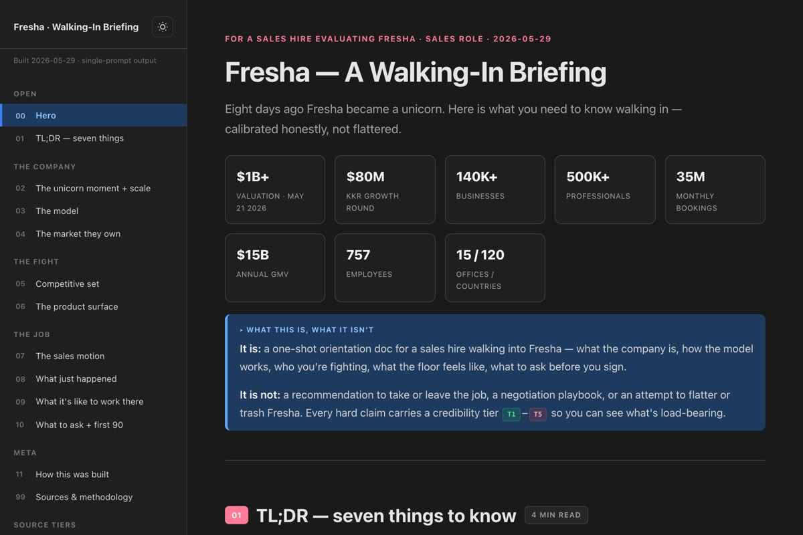
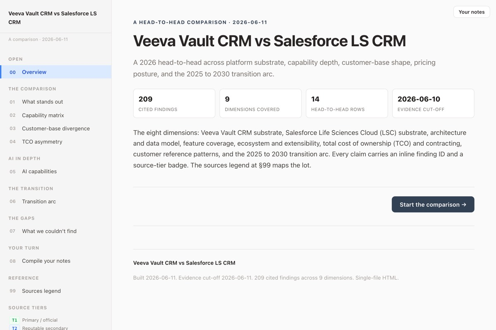

I build the systems and learning programs that get people and customers to succeed.
Proven by hand at Coding Temple, now amplified by an AI operating system I built myself. I walk into something unstructured and build the system that makes people and customers succeed. Capability and vision first, AI as a mastered multiplier shown through the artifacts below.
The through-line: for twenty years, across kitchens, a bootcamp, EdTech operations, and independent consulting, the work has been the same. Walk into a messy situation, find the real constraint, and build the system that makes people and customers succeed, repeatably.
I proved it by hand first. Then I had the vision to systematize it.
Capability and vision came first. I was one of the strongest teachers and Customer Success operators at my bootcamp, I conceived and ran its flagship program, and I built the systems that made the operation legible, all before AI was in the picture. Then, deliberately, I went AI-native and built the operating system that amplifies the same craft.
- Top educator, presenter, and curriculum builder. One of the most requested instructors at Coding Temple. The founder recognized the teaching effectiveness, which is what pulled me from instruction into broader operations.
- Rebuilt Customer Success infrastructure for hundreds of accounts: onboarding workflows, hiring-partner pipelines, coaching frameworks, executive dashboards. 20%+ fewer advisor touchpoints, +12% placement.
- Conceived and ran the Tech Residency, the bootcamp's flagship 8-week experiential program, from an idea to the company's key hiring product. After launch, about 70% of the bootcamp's hired grads came through it.
- Built the Notion systems that connected scattered tools and gave the operation full student-tracking visibility, where before there had been none.
Then I systematized my own craft into reusable engines: ODC, then SEE, then JSE, then EngineOS. I saw AI coming, studied it deliberately, used it to do real work, and then built the systems that automate the building itself. The vision and the architecture are mine. AI is the multiplier, and the work in the sections below is the proof, never a claim you have to take on faith.
Depending on why you are here, jump to your lens. Each one leads with what I did by hand, then points to the proof.
AI systems work
I did not learn AI to keep up. I studied it deliberately, used it to do real client-grade work, and then had the vision to systematize my own craft into reusable engines. The architecture is mine. Here is what it produced.
- EngineOS. A unified multi-engine AI operating system I designed and use daily: 36 skills, 85 patterns, 39 capabilities, 4 engine tenants plus a sandbox tier, all counted from the repository. It ships client-grade research, competitive intelligence, CRM automation, and content.
- Real orchestration, not a chat window. A governance stack (a plan on disk plus a forced verification pass), a second-brain memory layer, and MCP integrations into Attio, Bright Data, Puppeteer, Context7, and Notion.
- I ship real software, not just prompts. A working trading-assistant application (Flask plus the Anthropic SDK, roughly 5,600 lines) runs locally and is available to demo on request.
Education and enablement
Before any of the AI work, teaching was the craft. I built learning arcs from a blank page, coached one on one, and turned a program idea into a company's flagship product.
- Top instructor and demo presenter. Delivered technical curriculum across full-stack modules, ran whiteboard drills and 1:1 coaching. Classroom results are what earned the move into operations.
- Conceived and ran the Tech Residency. An 8-week experiential program I invented, built, and ran as product manager, creator, and operator. It became the bootcamp's key hiring differentiator.
- Enablement that makes a product land fast. The public artifacts below turn a complex SaaS into something a reader understands in minutes, and productize a process so a new person can run it from a playbook.
Sales and customer success
I rebuilt a customer success function from scratch, tied it to measurable outcomes, and built the systems that made the whole journey visible. The numbers below are verified.
- Rebuilt Customer Success for hundreds of accounts. Onboarding workflows, hiring-partner pipelines, coaching frameworks, and executive dashboards. 20%+ fewer advisor touchpoints, +12% placement, with a retention analytics system that surfaced at-risk people about two weeks earlier than before.
- Full visibility from scattered tools. The Notion systems I built gave the operation a single, legible view of every account's journey, where before there had been none.
- Renewal methodology and CRM fluency. A 6-stage customer renewal methodology (11 deliverables per account) built during a fractional Solutions Engineering engagement with a healthcare-education platform, plus live CRM integration work and a cited competitive read of two enterprise CRMs.
EngineOS, and how it is built
EngineOS is a unified, two-layer AI operating system: a shared OS layer of skills, methodology, and governance, and domain tenants that inherit it. It absorbed the standalone engines I built before it (ODC, then SEE, then JSE) and has been used daily for months to ship client-grade work. Per my honesty rule, this is proof of systems thinking, AI mastery, and product vision. It is not the actor in a "tell me about a time" story. It is the artifact.
Every number here is counted directly from the repository, not estimated. The point of a system is that it can be measured.
How it is built
The governance stack
Nothing ships from a whim. Substantive work is classified, planned on disk, and gated: a forced skill chain, a QA pipeline, and an independent adversarial evaluator that scores the output from a clean context.
Process as infrastructure, so the output is client-grade by construction.The skill architecture
36 skills discovered natively and loaded on demand, under a tiered context budget so the system only pulls what the task needs. Tool access is scoped per skill.
A composable capability layer, not one giant prompt.The second brain
A capture, compile, and retrieval memory layer with health monitoring. Sessions write as they go, so context survives compaction and the system gets smarter across engagements.
Durable knowledge architecture, not throwaway chats.The engine tenants
Domain-specific engines inherit the shared OS and keep their own knowledge and workflows. The path from ODC to SEE to JSE to EngineOS is a deliberate distillation of the same craft.
Product vision: reusable engines, not one-off tools.A one-off AI prompt
EngineOS
The difference between using AI and engineering with it is the difference between an answer and a system that produces good answers on demand. That system is what I designed.
Go deeper: why a hiring reader should care
Public work you can open
These are real, hosted outputs, scrubbed and public. Click a preview to open the live page. They show enablement, research, and competitive analysis at delivery quality.

Go deeper: the competitive read

Go deeper: who leads today
The Tech Residency
The clearest single answer to "tell me about a time you drove a real outcome." I conceived the Tech Residency, was made its product manager, and built it from an idea into the bootcamp's key hiring product. No AI in this story. This is craft.
- Owned employer-partner BD end to end. Recruited outside employer-clients to submit real MVP projects, ran those relationships, set up their communication with the assigned student dev teams, and built systems to make that coordination easier.
- Served the students as the real clients. Feedback loops and program analytics so the residency improved on evidence, cohort over cohort.
- Automated the setup. Per-cohort project configuration went from about four hours to about fifteen minutes at full specification compliance.
After launch, the Residency raised the company's overall hiring average. Employer enthusiasm is qualitative on purpose: they cited it as their key differentiator, and I do not dress that up with a second number.
Go deeper: why this is the story I lead with
Confidential client work
Some of the strongest work contains client data or a named reader, so it is not linked. Here it is described in the abstract. I am glad to walk through any of it in a conversation.
A multi-round investment-analysis suite
For a private company, a structured SME-iteration loop plus a claim-by-claim read of a roughly 24-slide investor deck, delivered securely behind an identity gate.
Proves: highest-rigor synthesis, SME-loop craft, secure delivery.A private pre-launch SaaS review
A candid product and code review for an unlaunched SaaS, including a self-corrected hostile review that pressure-tested my own conclusions before delivery.
Proves: technical review judgment and intellectual honesty.Personalized company briefings
Hosted walking-in briefings tailored to a specific reader ahead of a decision or conversation, kept private for that reason.
Proves: research turned into decision-support synthesis.Secure delivery for confidential work
A private hosting path, a locked repository pushed to a static site behind an identity gate, so client-confidential deliverables can be shared with exactly the right people and no one else.
Proves: an infrastructure and trust signal, not just documents.Why hire me
I would rather be the person who walks in already doing the work than the person adapting to a job description.
Give me a real product, a sound team, and a function that is still being defined, and I will build the system that makes people and customers succeed.
What I am looking for
- An established company with real leadership and a product worth believing in.
- A frontier role in Customer Education, Enablement, Customer Success, Implementation, or Developer Education, at IC to first-line-lead scope.
- Chicago hybrid is ideal, and I am open to more in-office time. Remote works for the right role.
Let us talk
The fastest way to judge the fit is to open the work above, then read the resume. If it looks like your kind of problem, I would like to hear about it.